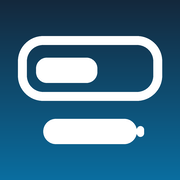
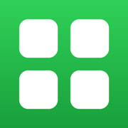
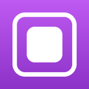
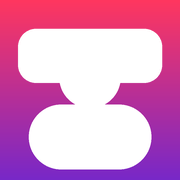
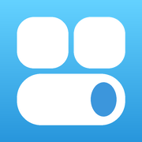
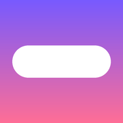
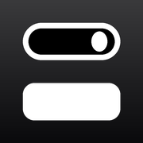
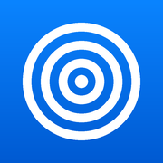
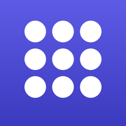
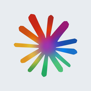

Nguồn tweak cho iOS 12 (rootful)
https://hgphutjb.github.io/repo/
Thêm vào SileoThêm vào ZebraThêm vào Cydia

18LSv1.0.0Tuy bien dong ho man hinh khoa (font/mau/do day), dong ho nho gon kieu iOS 27, kem thanh pin + ten may26Boxv6.0.2Hộp thoại thông báo iOS 26
26Homev6.0.4Tùy chỉnh màn hình chính giống iOS 26/27
26Morphv6.0.37Animation đóng mở ứng dụng của iOS 26/27
26Wallv1.0.7Màn hình khóa vật thể che đồng hồ
27CCv6.0.5Control Center viền glass iOS 26
27Siriv1.5.0iOS 27 Siri AI cho iOS 12AppStore++v2.3.15-7App Store companion for jailbroken iOS devices
DynaFakev6.0.26Dynamic Island ảoLiquid Tabv6.0.2Tab bar iOS 26MagSafe Animationv1.1.4Animation sạc pin magsafe
OpenWavev6.0.3Animation mở khóa iOS 26, giống 26Unlock
UnlockCodev6.0.7Animation nảy mật khẩu của iOS 26
ClaudeMiniv0.5.1The Best Gemini client for iOS 12 or Later